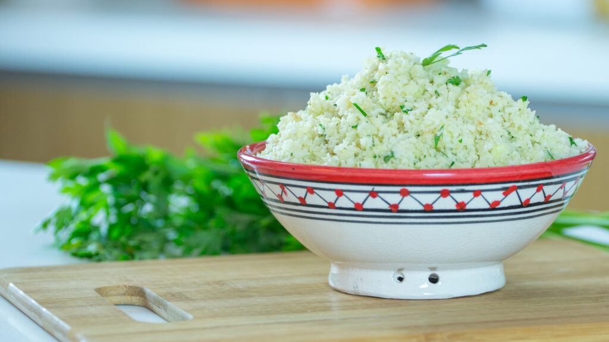

Receitas

Arroz de Couve-Flor
Ingredientes:
- Arroz
- Couve-Flor
- Cebola Média
- Azeite
Modo de preparo:
Deixe a couve-flor picada, adicione os ingredientes e refogue bem, adicione sal, tampe a panela e deixe cozinhar.

Coxinha de Brigadeiro
Ingredientes:
- Leite Condensado
- Chocolate em Pó
- Manteiga
- Morango
- Chocolate Granulado
Modo de preparo:
Junte o leite condensado, chocolate em pó e manteiga, aqueça no fogo baixo, envolva os morangos e passe o granulado.

Bolo de Café
Ingredientes:
- Farinha de Trigo
- Açucar
- Café Coado
- Chocolate em Pó
- Ovos
Modo de preparo:
Bata o açucar, as gemas e o café, adicione farinha e chocolate e mexa bem, bata as claras e junte à mistura.